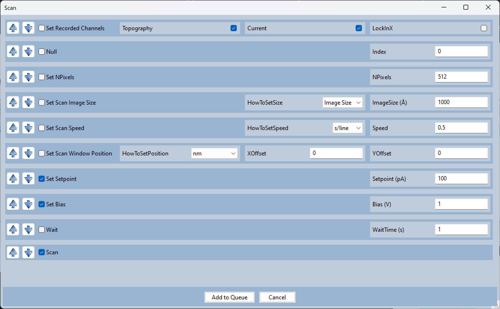
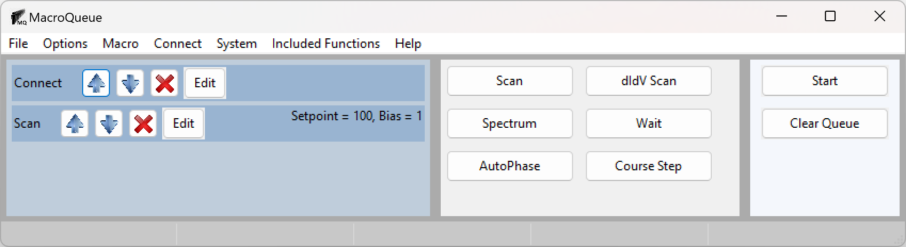
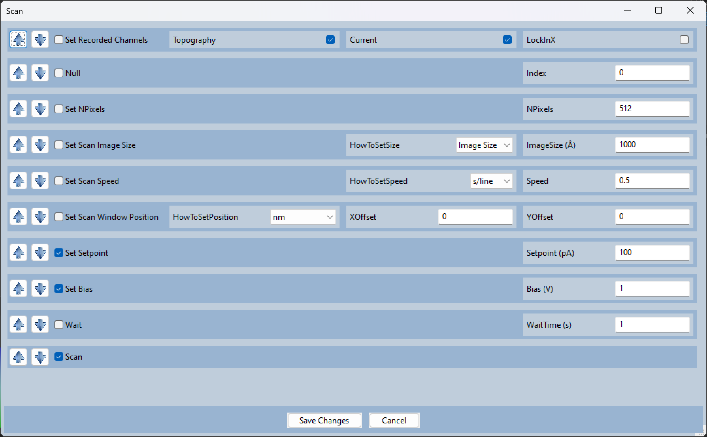

Add a Macro to the Queue
Each macro consists of several functions, each function has a it’s own dark blue area.
You can choose the order the functions will run by using the arrows on the left. The functions at the top will run first.
You can chose which functions will be ran by using the checkmark on the left. For example, in the following image, the bias will be set to 1 V and the setpoint will be set to 100 pA but the image size and scanning speed will be unchanged.
After pressing “Add to Queue”, the macro, Scan, will be added to the bottom of the queue.
At any time before it starts, you may press the edit button to bring up a diaglog to change the parameters.
